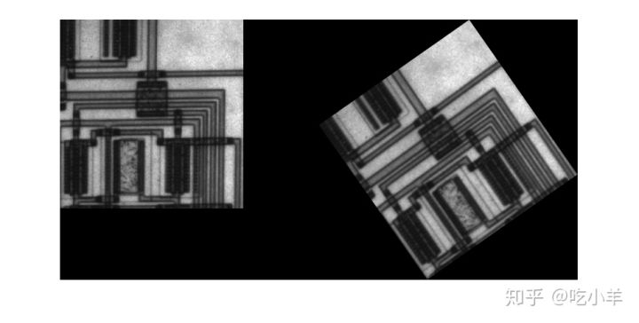
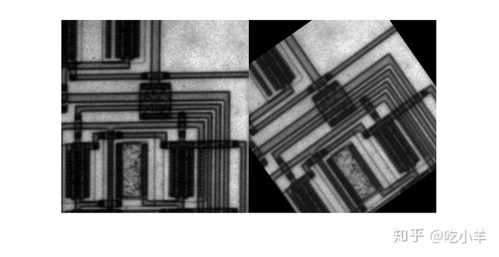

Home
本示例说明如何使用imrotate函数旋转图像。旋转图像时，可以指定要旋转的图像和旋转角度（以度为单位）。如果指定正旋转角度，则图像逆时针旋转；如果指定负旋转角度，则图像将顺时针旋转。
默认情况下，输出图像足够大，可以包含整个原始图像。超出原始图像边界的像素将设置为0，并在输出图像中显示为黑色背景。但是，您可以使用' crop'参数将输出图像指定为与输入图像相同的尺寸。
默认情况下，imrotate使用最近邻插值确定输出图像中的像素值，但是您可以指定其他插值方法。有关imrotate支持的插值方法的列表，请参见参考页。
逆时针旋转图像
将图像读入工作区。
I = imread('circuit.tif');
将图像逆时针旋转35度。在此示例中，指定双线性插值。
J = imrotate(I,35,'bilinear');
显示原始图像和旋转的图像。
figure imshowpair(I,J,'montage')

裁剪旋转图像
将原始图像逆时针旋转35度，指定将旋转后的图像裁切为与原始图像相同的尺寸。
K = imrotate(I,35,'bilinear','crop');
显示原始图像和新图像。
figure imshowpair(I,K,'montage')

======================================================================
我的测试结果及程序
下面是我测试的代码：

注：本文根据MATLAB官网内容修改而成。